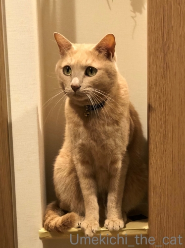
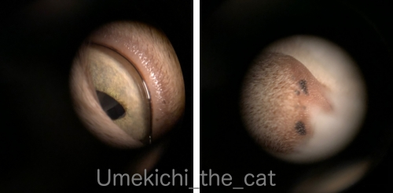
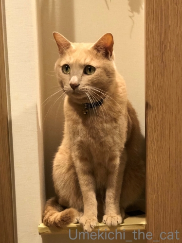
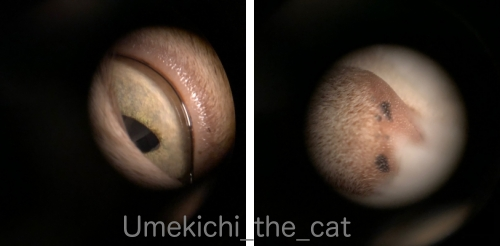

冬支度、始めました。 [梅吉]
皆様のお家で冬の準備が進んでいる様子、ブログで拝見しております。
もちろん我が家でも！
季節の変わり目には（特に）お手伝いに張り切るこのお方・・・
（29秒 掃除機の吸引音がします）
春にも許せなかった掃除機ですが秋にもやっぱりお許しいただけませんでした(ｰ ｰ;)
一体何が気に触るのだろうと
圧縮袋なしの状態で掃除機を畳に吸いつけてみたら・・・喰らい付いてきましたw
しゅい〜んと吸引する音が気に入らないのかな？
幼い頃は掃除機かけているだけで攻撃してきたのでその名残かしら。
でも、梅吉ももう４ちゃいのオ・ト・ナですから今は普通に掃除機は使えてますよ( ´艸｀)

飾り棚のものを避けたらすかさず上る。これもお手伝いのうちですか？

今後は梅吉さんに飾り物になって頂こうかしらwww

以前から欲しかった単眼鏡を買いました！
6倍率です。
美術館等では４倍でも良いそうですが
お寺等で奥にいらっしゃる御本尊様を見たりするには６倍くらいが良いみたい。
こういうものを買ったら・・・・・

やっぱり最初に見るのは「うちの子」ですよねー。
左が目、右がお鼻の先っちょです。よく見えるでしょ。
単眼鏡越しにおっとが撮影してました。ホラー写真ではないですよw
 ↑ガブッと一押し↑
↑ガブッと一押し↑
先週日曜日に正倉院展に行ってきました。
この日を選んだのは
ラグビーW杯も終わって早く帰ってテレビを見なくちゃ！と焦らなくて良いから（爆
正倉院展は入館するのさえ常に行列と思っている方も多い様なんですが
激混みなのは午前中、特に朝イチと会期末の週末。
朝イチが混むのは観客の年齢層が高いのでみなさん朝が早いんでしょうねー。
時間と日にちを選べば並ばずに入館出来ます。
ちなみに私たちが入館したのは2時近くだったかな。並ばずに入れましたよ。
もちろん会場内展示品の前には二重三重の人垣は出来てましたが
それも順序にこだわらずうまく選んで観るとちゃんと最前列で鑑賞できます。
奈良公園付近の主役、鹿さんです。
角切り後間もなかったので人間不信気味だったのかな？
（角切りは10月中旬ごろに行われる恒例行事です）
みなさんちょぴり腰が引けてました。
左端に写っているおばちゃんは家の近所でひろったドングリを持参。
観光客の増加のせいか最近の鹿さんは鹿せんべいに食傷気味の様なんですが
ドングリは喜んで食べてくれます＾＾
国立博物館の入り口にて。
今年の目玉の一つ
鳥毛立女の屏風絵が看板になってます。
教科書には必ず載っているので皆さんご存知の絵でしょうか。
で、これ、
作られた当時は髪や着衣の部分が日本のヤマドリの羽で装飾されていたのをご存知でしょうか。
なので鳥毛立女。
人物の彩色は顔のみでその他の部分が色付けされていないのはそのためです。
で、実物を単眼鏡で見たならば・・・羽こそ残ってませんが名残がわかる！！！
単眼鏡の威力にびっくり。
今年も素晴らしい作品ばかりの展示でしたが紹介していると長くなるので
単眼鏡で価値と良さをより一層楽しめた展示品をあげますね。
（写真は宮内庁のHPよりお借りしました）
『礼服御冠残欠』(らいふくおんかんむりざんげつ)
聖武天皇と光明皇后が実際に着用していた冠の飾りの一部です。
金細工の細かいところ、真珠の（右の黄色に光っているもの）表面のてりが
単眼鏡を通して一層輝いて見えました。
（写真は宮内庁のHPよりお借りました）
『七条刺納樹皮色袈裟』（しちじょうしのうじゅひしょくのけさ）
聖武天皇が着用していた袈裟です。
今までの正倉院展でも布系のものは見てきましたが
展示会場の照明では暗くてよく見えずボロ切れにしか見えないものもあって（こらっ！）
正直「なんだかな・・・」と思っていたのですが
単眼鏡を通すとここまで色鮮やかではありませんが
織りや縫い合わせの細部までよく見えてこのくらいの落差を感じました。
繊維の一本一本までよく見えるー！
画質の悪い映像がいきなり４K・８Kになった感じ！！
今年の正倉院展は単眼鏡のおかげでいつもの年より一層楽しめました。本当に買ってよかった。
正倉院展、会期は今月14日（木）までです。
今週末は激混みでしょう・・・
シーズンごとに変わる近鉄のポスター。
今回のものは特に気に入りました(^_－)☆
もちろん我が家でも！
季節の変わり目には（特に）お手伝いに張り切るこのお方・・・
（29秒 掃除機の吸引音がします）
春にも許せなかった掃除機ですが秋にもやっぱりお許しいただけませんでした(ｰ ｰ;)
一体何が気に触るのだろうと
圧縮袋なしの状態で掃除機を畳に吸いつけてみたら・・・喰らい付いてきましたw
しゅい〜んと吸引する音が気に入らないのかな？
幼い頃は掃除機かけているだけで攻撃してきたのでその名残かしら。
でも、梅吉ももう４ちゃいのオ・ト・ナですから今は普通に掃除機は使えてますよ( ´艸｀)

飾り棚のものを避けたらすかさず上る。これもお手伝いのうちですか？
今後は梅吉さんに飾り物になって頂こうかしらwww
以前から欲しかった単眼鏡を買いました！
6倍率です。
美術館等では４倍でも良いそうですが
お寺等で奥にいらっしゃる御本尊様を見たりするには６倍くらいが良いみたい。
こういうものを買ったら・・・・・

やっぱり最初に見るのは「うちの子」ですよねー。
左が目、右がお鼻の先っちょです。よく見えるでしょ。
単眼鏡越しにおっとが撮影してました。ホラー写真ではないですよw
先週日曜日に正倉院展に行ってきました。
この日を選んだのは
ラグビーW杯も終わって早く帰ってテレビを見なくちゃ！と焦らなくて良いから（爆
正倉院展は入館するのさえ常に行列と思っている方も多い様なんですが
激混みなのは午前中、特に朝イチと会期末の週末。
朝イチが混むのは観客の年齢層が高いのでみなさん朝が早いんでしょうねー。
時間と日にちを選べば並ばずに入館出来ます。
ちなみに私たちが入館したのは2時近くだったかな。並ばずに入れましたよ。
もちろん会場内展示品の前には二重三重の人垣は出来てましたが
それも順序にこだわらずうまく選んで観るとちゃんと最前列で鑑賞できます。
奈良公園付近の主役、鹿さんです。
角切り後間もなかったので人間不信気味だったのかな？
（角切りは10月中旬ごろに行われる恒例行事です）
みなさんちょぴり腰が引けてました。
左端に写っているおばちゃんは家の近所でひろったドングリを持参。
観光客の増加のせいか最近の鹿さんは鹿せんべいに食傷気味の様なんですが
ドングリは喜んで食べてくれます＾＾
国立博物館の入り口にて。
今年の目玉の一つ
鳥毛立女の屏風絵が看板になってます。
教科書には必ず載っているので皆さんご存知の絵でしょうか。
で、これ、
作られた当時は髪や着衣の部分が日本のヤマドリの羽で装飾されていたのをご存知でしょうか。
なので鳥毛立女。
人物の彩色は顔のみでその他の部分が色付けされていないのはそのためです。
で、実物を単眼鏡で見たならば・・・羽こそ残ってませんが名残がわかる！！！
単眼鏡の威力にびっくり。
今年も素晴らしい作品ばかりの展示でしたが紹介していると長くなるので
単眼鏡で価値と良さをより一層楽しめた展示品をあげますね。
（写真は宮内庁のHPよりお借りしました）
『礼服御冠残欠』(らいふくおんかんむりざんげつ)
聖武天皇と光明皇后が実際に着用していた冠の飾りの一部です。
金細工の細かいところ、真珠の（右の黄色に光っているもの）表面のてりが
単眼鏡を通して一層輝いて見えました。
（写真は宮内庁のHPよりお借りました）
『七条刺納樹皮色袈裟』（しちじょうしのうじゅひしょくのけさ）
聖武天皇が着用していた袈裟です。
今までの正倉院展でも布系のものは見てきましたが
展示会場の照明では暗くてよく見えずボロ切れにしか見えないものもあって（こらっ！）
正直「なんだかな・・・」と思っていたのですが
単眼鏡を通すとここまで色鮮やかではありませんが
織りや縫い合わせの細部までよく見えてこのくらいの落差を感じました。
繊維の一本一本までよく見えるー！
画質の悪い映像がいきなり４K・８Kになった感じ！！
今年の正倉院展は単眼鏡のおかげでいつもの年より一層楽しめました。本当に買ってよかった。
正倉院展、会期は今月14日（木）までです。
今週末は激混みでしょう・・・
シーズンごとに変わる近鉄のポスター。
今回のものは特に気に入りました(^_－)☆

カフェオレ色の梅吉

梅吉 2023年8月10日 永眠


梅吉と出会った譲渡会

犬猫の理由なき殺処分ゼロ
妄想広告
UMEKICHI 光

爆発的に早い！
時々攻撃的！
Thanks to Mr.Boss365
爆発的に早い！
時々攻撃的！
Thanks to Mr.Boss365

梅吉さんを飾るのにぴったりサイズの棚!
単眼鏡ホラー写真もなかなか凄いです。特に目の方怖い。
by zombiekong (2019-11-07 00:51)
飾り棚、梅吉さんにぴったりな空間です（笑）
梅吉さんの白目、迫力があります！
by kiki (2019-11-07 02:15)
猫には掃除機は天敵か？（ﾟ□ﾟ）
わたしは、大阪・京都派ですw
by 英ちゃん (2019-11-07 05:39)
梅吉さん、冬支度のお手伝いご苦労様です(_ _)
飾り棚にすっぽり入って落ち着いてますねぇ＾＾
全身使って掃除機に攻撃してますが
完璧にタイミングを計って確実に仕留めてますねぇ(⌒-⌒; )
by ニッキー (2019-11-07 07:05)
我が家は怖がって逃げるので
寝てる時はこちらが気を使って近づかないようにしてます＾＾；
by ぽちの輔 (2019-11-07 07:29)
梅吉さん、お手伝いお疲れさまでした(^^)
棚はまるで梅吉さんの為にあるような感じですね。
鹿はたまに近所の道路や山で見かけますが、野生の鹿はやはり怖いです(^_^;)
by kou (2019-11-07 08:14)
正倉院展は人気みたいですね！
奈良で鹿に沢山会えますね。
梅吉さんは掃除機にも馴れたのですね(^^)
by ma2ma2 (2019-11-07 10:02)
何かを始めるとお手伝いしなくては
いけない気分になるのでしょうか(#^.^#)
単眼鏡！！
我が子をじっくり観察（笑
楽しそうでです♪
by きぃ (2019-11-07 10:03)
掃除機に向かって果敢にタックルを繰り返す梅吉さん♪
さすがラグビー大好きおかーさんの子だけあります。
うちのニャンズはビビッて私が掃除機を握っただけで逃げ去ります。
あのシュイ～ンという音が大嫌いみたいです。
タルちゃんはシュイ～～～だけで I can’ｔ stop the イカミミｗ状態。
正倉院展、今週はまだ激混みの前かな？
リュカさんに続いて、ちぃさんも単眼鏡ゲッツですねｗ
細かい装飾や文字、布目など見るにはよさげですね(^^
by marimo (2019-11-07 10:59)
こんにちは。
梅吉君、ナイスな首じめ？（笑）自然な感じが素晴らしいです。
春より余裕があり洗練された感じ？掃除機の音を気にしない梅吉君、大物ですね。
「単眼鏡」一瞬ビビりました？お目々は怖いですね（笑）
「正倉院展」にお出掛けの方多いですね。羨ましいです！！
神の使い鹿さん「鹿せんべいに食傷気味」は最近よく聞きます。ドングリ販売も良いかも？
「七条刺納樹皮色袈裟」テレビでもみましたが、絵柄がよく分からなかったです。
「ボロ切れ」の質感は正直な感想と思います。出来れば新規に復元して欲しい感じです。
ちぃさん、いい写真撮るなーと思ったら・・・
近鉄のポスターでしたか（笑）！？(=^･ｪ･^=)
by Boss365 (2019-11-07 11:02)
梅吉さん見事なタックル！ ジャッカルに近いでしょうか？？^^
ウチのは紙パック式は平気、サイクロンは飛んで逃げます。
私には違いがよくわかりませんが、たぶん音が違うのでしょう^^;
単眼鏡にこんな使い方があったなんて(#^^#)
一瞬眼科検診の結果かなにかかと思いましたよ～。
これを使えばこてつの耳の中の汚れもよく見えるかしら？？
正倉院展じっくり鑑賞出来て何よりでした。
確かに古いものは照明が暗いと「ボロ切れ」や「襖のしみ」にしか見えない作品ありますね( ;∀;)
by ゆきち (2019-11-07 12:48)
梅吉さん、掃除機に猛タックル！
直ぐ側に来てるところから可愛い～＾＾
私の掃除機だと丸っこい本体にしっぽみたいのも付いてるからあまり変わらない大きさの動物に見えるのかなって感じでバトルしてました。もっと大きいのだと近寄りませんでした＾＾；
正倉院展で単眼鏡！いいですね＾＾
鹿さん、可愛い～＾＾
前記事、デクラーク、千代の富士に似てる！誰かに似てると思ってたんですよ～なるほど！ 遠目には少年か妖精のようだけど、近づくとガッチリしてるし、顔もそういう人の顔なのよね＾＾
by sana (2019-11-07 15:57)
その音がイヤなんやーーってことかしら＾＾
見事なタックル攻撃ですね(￣∇￣；
置物と化している梅ちゃん、すごくかわいいです❤
ホント飾っておきたいｗｗｗ
単眼鏡でドアップ＾＾なかなかホラーチックですね(笑)
正倉院展、１４日までですかー＾＾
２３日に猫友たちと鹿とたわむれに奈良に行く予定ですが
間に合わないですね(〃￣ω￣〃ゞ
by カトリーヌ (2019-11-07 17:14)
うちにもこんな飾り物が欲しいです。
展覧会はどこも激混みなので尻込みしちゃいますが
なるほど午後のほうが狙い目なのですね～
by liang (2019-11-07 17:19)
梅吉ちゃん
掃除機にタックル
しかも一人ダブルタックル！！
あぁーワールドカップが終わってしまいましたねぇ・・・
うるうる・・・
by ぱだおくん (2019-11-07 19:48)
掃除機に戦いを挑むオトコ！梅吉さん！すばらしいです。
その闘志あふれるお姿、サイコーです。
普通、逃げますよねーー(笑)
単眼鏡で見ているお目々は白目でしょうか。
やっぱり怖いですよー。
by ChatBleu (2019-11-07 21:48)
掃除機を怖がるどころかタックルするなんてスゴイですね！
飾り物、いいなあ。ウチは黒い影しかならないので羨ましいです。^^;
正倉院や鹿さん、もう何十年も合ってないかも。。。
by yes_hama (2019-11-07 22:16)
正倉院展、僕はお昼過ぎだったので少しだけ並びました
新聞やテレビで紹介されている宝物は人だかりでしたが
じっと見ていると人が途切れるタイミングがあって
落ち着いて見られるものも多かった
梅吉君、すらっとスタイル良いですね
うちの子はちょっと短足っぽい気が・・・
まだ子どもだからかな？（苦笑）
by 藤並 香衣 (2019-11-07 23:45)
梅吉さんが毎回その体制でお客さんをお出迎えしたら大喜びですね(^^♪
そしてようこそ鹿の国へ♪
この時期は発情期なので気が立っているのかもしれませんね。
ぜひ次回は大量のドングリ持参でのお越しをお待ちしております(笑)
by yamatonosuke (2019-11-08 01:18)
そうかー。鹿せんべいも飽きられてるね(^_^;)
確かにどんぐりの方が栄養もあって美味しいはず！
単眼鏡、美術館巡りには必需品なのですね。
考えたこともなかったわ〜。
by よーちゃん (2019-11-08 08:43)
梅吉くん攻撃してますねーｗｗ
でも攻撃の仕方がくるりんってして可愛い^m^
この調子だと、来春も同じことしてるに違いない！！
その動画も楽しみにしてるよｗｗ
単眼鏡、６倍率買ったのね！
うちは４倍率だよお。なるほど、お寺では確かに６倍率の方がよさそう^^
正倉院展で大活躍したみたいで、なんだかわたしも嬉しい(笑)
トーハクの正倉院展でもヤマドリの羽で装飾された屏風が展示されてます。
後期展示にいってきたけど、まじすごい人ｗｗ
ささーーっと見て退散しちゃったよ(笑)
by リュカ (2019-11-08 09:31)
梅吉さん、掃除機の音が苦手なのかな。
by ニコニコファイト (2019-11-09 06:46)
掃除機に挑む梅吉さんは、ホンモノの勇者ですね!!!
ウチで、そんなんしてたら、誰も寄りつきませんよ(^_^;
･･･梅吉さんも、来年はハロウィンのかぼちゃ仮装をぜひ〜♪
茶トラ猫さんだけのお楽しみですからにゃ(^.^)
ちなみに、帽子は黒の色画用紙で、いいかげんに作ってます。
背中の目鼻口は、貼れるタイプのフェルトを切るだけ♡
by のらん (2019-11-09 10:49)
梅吉さん、タフだなぁ！吸引機にガブッといきますか！
うちのくーちゃんも掃除機をストーカーするけど、ここまで熱血漢じゃありませんね。音が好きなんですかね。単眼鏡も怖いです〜〜。
by nachic (2019-11-10 09:48)